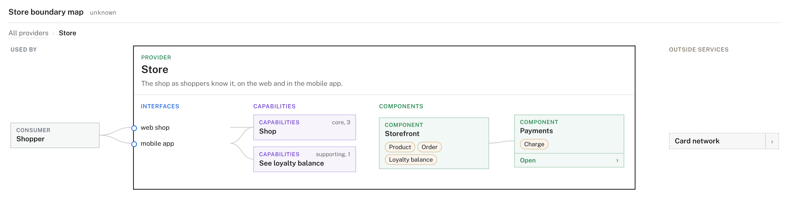

npx skills
Claude Code, Codex and most other agents.
npx skills add meaningfool/boundary-model --skill '*'Nine agent skills for Claude Code, Codex and other agents. They map who uses your system, for what and through which interfaces, keep that map current, and plan each change from it.
Prefer a plugin? Claude Code, Codex, or by hand ↓
A coding agent sees a repository as files, folders and functions, so it plans a change as a list of files to edit. What the change means for the people using the code, and which part should own it, stays unclear until code review, when it costs the most to change.
The map describes your system one level up: the resources its consumers care about, what they can do with them, and through which interfaces. Open a provider to see the components it relies on and what each one keeps.

Drawn by visualize-boundaries. An online store, opened one level.
The agent builds the map from the code and cites the files behind each boundary. You settle the names, what matters, and whether the map reads clearly. Each skill stops at the decisions that belong to you.
“Map this repository's boundaries.”
The agent reads the docs and the code, one level at a time, and drafts a map that cites the files behind each boundary.
“Review the map with me.”
The agent sends one image per screen and asks at most five short questions per level, each with its suggestion.
“Is the map current?”
The agent lists what changed since the map's revision and works out what that does to each boundary.
“Let shoppers pay with gift cards.”
The agent asks one question at a time, only those whose answer could add, remove or redefine a boundary change.
“How should we split this?”
The agent compares two or three ways to divide the work, names their smells, and recommends one.
“Settle the details.”
The agent asks each question that has a real tradeoff, one at a time, with its recommendation.
“Write the issues.”
The agent drafts one issue per slice, each with its proof of done, and checks the set for contradictions.
Ask for a change in your own words. The agent asks questions until no answer could change the shape, then states the change as the boundary changes it leads to, marked against the map. Slicing, details and issues come after.
Shopper ↔ Store MODIFIED shoppers can pay with a gift card and see what is left on it
Interfaces: web shop · mobile app
Shop (core)
MODIFIED Place order: produces Order · mutates Loyalty balance · mutates Gift card
See gift card balance (supporting)
NEW See gift card balance: observes Gift card
Storefront ↔ Payments MODIFIED Payments charges an order to a gift card as well as to a card
MODIFIED Charge order: produces Charge · mutates Gift card
Shape complete: YES
Details: can a gift card pay for part of an order?
Install all nine skills side by side. The map scripts need Node 18 or later.
Claude Code, Codex and most other agents.
npx skills add meaningfool/boundary-model --skill '*'The nine skills as one plugin.
/plugin marketplace add meaningfool/boundary-model/plugin install boundary-model@meaningfoolThe nine skills as one plugin.
codex plugin marketplace add meaningfool/boundary-modelcodex plugin add boundary-model@meaningfoolWhat it is and why, how the skills work together, how to install them, and a real map.
Read the docsNine skills that map your system from its consumers' side, keep the map current, and shape each change on it with you before it is built.
One command installs the nine skills side by side for the agents you pick. Claude Code and Codex can also take them as one plugin.
You decideWhich agents, and whether the skills go in the project or in your user folder.
npx skills add meaningfool/boundary-model --skill '*'Ask in plain words, or name the skill. The agent reads the docs and the code one level at a time, checks every boundary against the code, and cites the files behind it.
You decideWhich system to map, what the agent may read, and where the map goes.
review-boundaries?The agent shows the map one level at a time, as images, and asks at most five short questions per level, each with its suggestion. When an answer would move a box, it draws both versions.
You decideWhat the parts are called, which ones matter, and whether the map reads clearly.
Fraud check keeps its own record of the charges it scores. Is it a component of its own?
Describe a change in your own words. The agent asks only the questions whose answer could add, remove or redefine a boundary change, then proposes the shape for you to confirm.
You decideThe answers, and whether the shape is right.
The agent compares ways to divide the work, settles expected behavior and design decisions with you, then drafts one issue per slice, each with its proof of done.
You decideThe slicing strategy, each tradeoff, and how the issues are grouped before they are published.
update-boundaries reads only what changed since the map's revision, and you review the difference.What it is and why, how the skills work together, how to install them, and a real map.
Read the docsnpx skills add meaningfool/boundary-model --skill '*'Or as a plugin: Claude Code, Codex, or by hand ↓
The boundary model describes a system as its consumers see it: who uses it, for what, and through which interfaces. Opening a provider shows the components it relies on, each with the state it keeps and the decisions it makes. Nine skills let your agent build that map from the code and work with it alongside you.
The person or system that uses the provider to get something done.
What the consumer believes it is using.
The channel the consumer uses, such as a web shop or an API.
Something the consumer can do with the provider's resources, to get a result.
Something with a state that the consumer cares about.
A part of a provider that keeps its own state or makes its own decisions.
visualize-boundaries draws the map as one page, one open box at a time, and as still images for a review. This is the Store example, opened one level.
The agent does the reading, the drafting and the drawing. Each skill stops at the decisions that belong to you.
| Skill | The agent | You decide |
|---|---|---|
| extract-boundaries | Drafts the map from the docs and code, citing files | Which system, what it reads, where the map goes |
| review-boundaries | Shows each level as images, asks at most five questions | Names, what matters, option A or B |
| update-boundaries | Lists what changed since the map's revision | The changes, in a review |
| visualize-boundaries | Draws the map as a page or as images | Nothing; it draws what the map says |
| shape-boundaries | Asks only questions that could change the shape | The answers, and whether the shape is right |
| slice | Compares two or three ways to divide the work | The strategy |
| refine | Asks each real tradeoff, with a recommendation | Expected behavior and design decisions |
| to-issues | Drafts one issue per slice, with its proof of done | How issues are grouped, and when to publish |
| use-boundary-model | Holds the model and the map format the others load | Nothing |
No. It starts from the consumers' side. How the system is built appears only when you open a provider, and a runtime or database is not a boundary by itself.
No. The skills write a map, a shape, plans and issues. Building the change is your usual agent work.
No. shape-boundaries works without one, and slice, refine and to-issues work on their own.
Not if you update it. update-boundaries reads only what changed since the map's revision, so earlier decisions stay.
Install all nine skills side by side: the map scripts find use-boundary-model in the folder next to theirs.
Claude Code, Codex, and most other agents.
npx skills add meaningfool/boundary-model --skill '*'
Installs the nine skills as one plugin.
/plugin marketplace add meaningfool/boundary-model /plugin install boundary-model@meaningfool
Installs the nine skills as one plugin. Start a new session to use them.
codex plugin marketplace add meaningfool/boundary-model codex plugin add boundary-model@meaningfool
These commands install for Claude Code. Keep the folder names.
git clone https://github.com/meaningfool/boundary-model.git cd boundary-model/skills mkdir -p ~/.claude/skills cp -R use-boundary-model extract-boundaries review-boundaries \ update-boundaries visualize-boundaries shape-boundaries \ slice refine to-issues ~/.claude/skills/
Four short pages: what it is and why, how the skills work together, install, and an example.
Read the docs